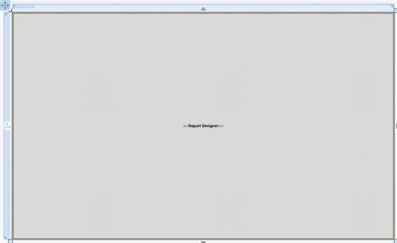
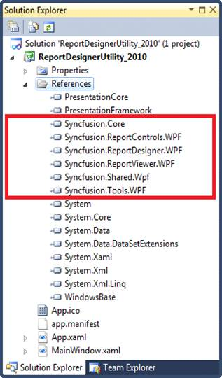
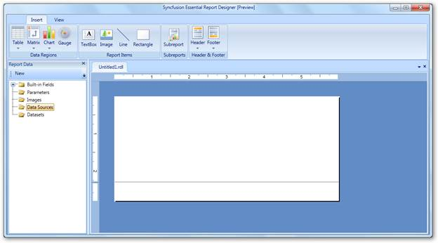
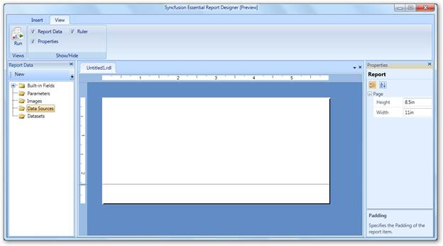

Users can create a simple application through the Visual Studio Designer with Syncfusion WPF Report Designer control using the following steps.
1. Create a new WPF application in VS2008 or VS2010, and then add the following XAML code.
|
[XAML] <syncfusion:RibbonWindow x:Class="Report_Designer_Utility_2008.MainWindow" xmlns:syncfusion="clr-namespace:Syncfusion.Windows.Tools.Controls;assembly=Syncfusion.Tools.WPF" xmlns:Reporting="clr-namespace:Syncfusion.Windows.Reports.Designer;assembly=Syncfusion.ReportDesigner.WPF" WindowStartupLocation="CenterScreen" xmlns="http://schemas.microsoft.com/winfx/2006/xaml/presentation" xmlns:x="http://schemas.microsoft.com/winfx/2006/xaml" Title="MainWindow" Height="600" Width="1000" Icon="App.ico"> <syncfusion:RibbonWindow.StatusBar> <syncfusion:RibbonStatusBar> </syncfusion:RibbonStatusBar> </syncfusion:RibbonWindow.StatusBar> <Grid> <Grid.RowDefinitions> |
2. Drag the Report Designer control from the Toolbox to the Report Designer window. The Report Designer window is modified.

Figure 3: Essential Report Designer Window
 Note: The following
code is automatically generated in the XAML window.
Note: The following
code is automatically generated in the XAML window.
|
[XAML] <Reporting:ReportDesigner ApplicationMenuVisibility="Collapsed" ToolboxVisibility="Visible" ReportDataVisibility="Visible" x:Name="ReportDesignerControl" Margin="0,6,0,-6" /> |
3. Check whether the following highlighted references are added in the References folder.

Figure 4: Solution Explorer
Note: After building and debugging the
application, the appearance of the Report Designer will be modified as shown in
the following illustration.

Figure 5: Adding Report Designer through Visual Studio Designer
4. To view the Properties grid, click the View tab and select Properties check box.

Figure 6: View Tab in Report Designer